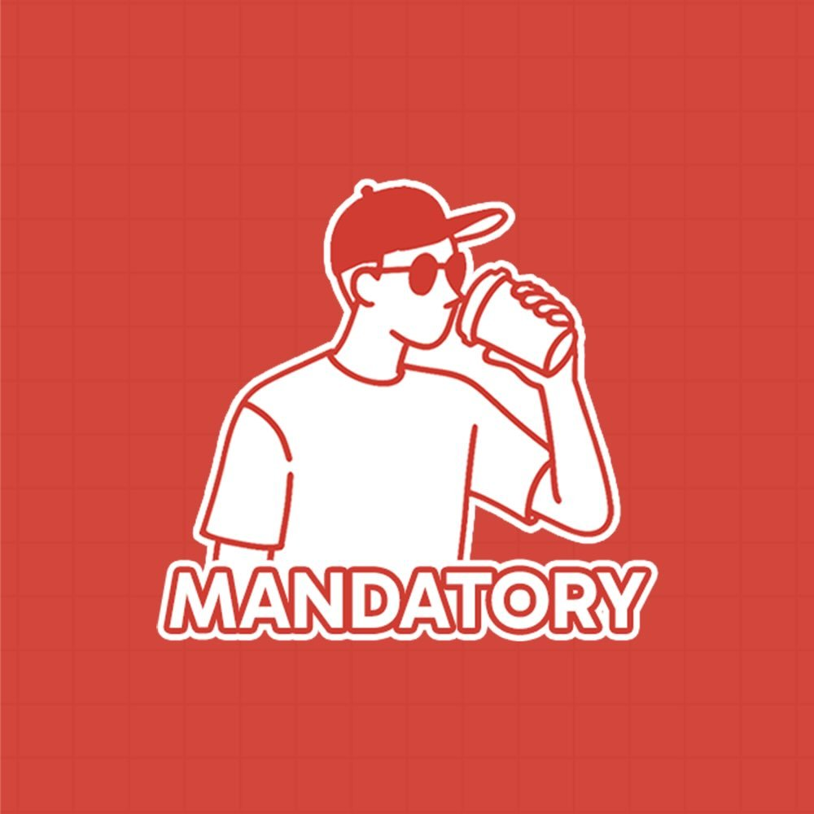
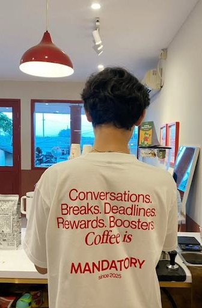
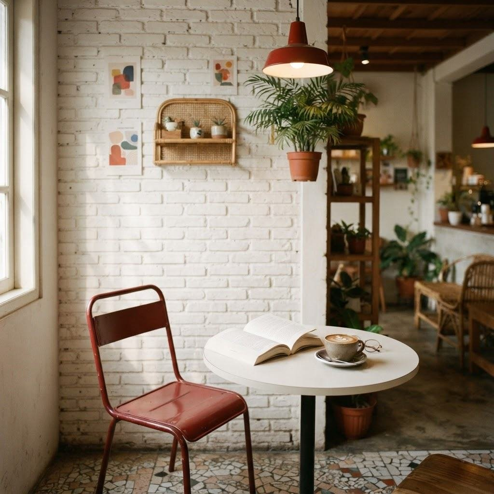

Ada hal-hal kecil yang menjaga kita tetap waras.
Dan beberapa di antaranya… tidak bisa ditunda.


Mandatory berangkat dari gagasan sederhana: sebuah tempat kecil yang membuat siapa pun merasa diterima. Merah yang berani bertemu putih yang tenang, seperti percakapan seru di sela hari yang panjang.
Datang sendiri dengan buku, bertemu teman lama, atau sekadar menikmati kopi. Di sini, hal-hal kecil punya ruang untuk terasa istimewa.
MANDATORY.Dari aroma pertama hingga tegukan terakhir, kami menyukai prosesnya. Biji kopi pilihan, racikan yang seimbang, dan sentuhan kecil yang membuatmu ingin kembali.
Ada rencana bertemu? Kunjungi halaman reservasi kami dan pilih waktu yang paling cocok.
Buka halaman reservasi ↗